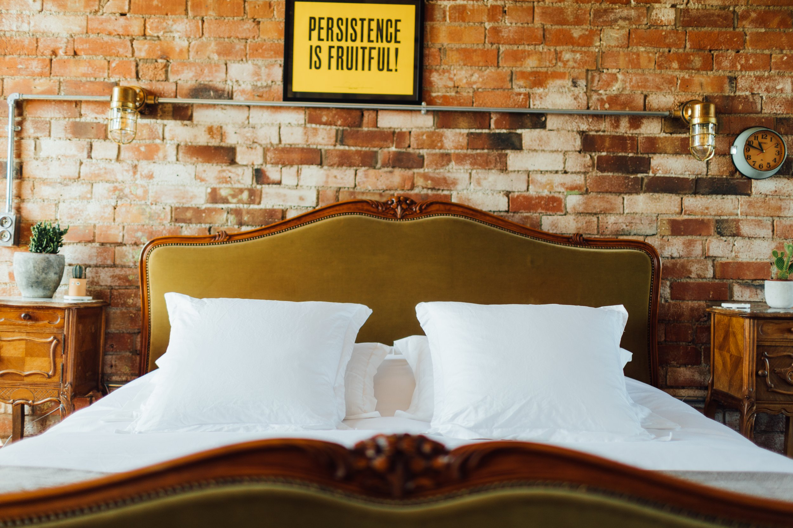
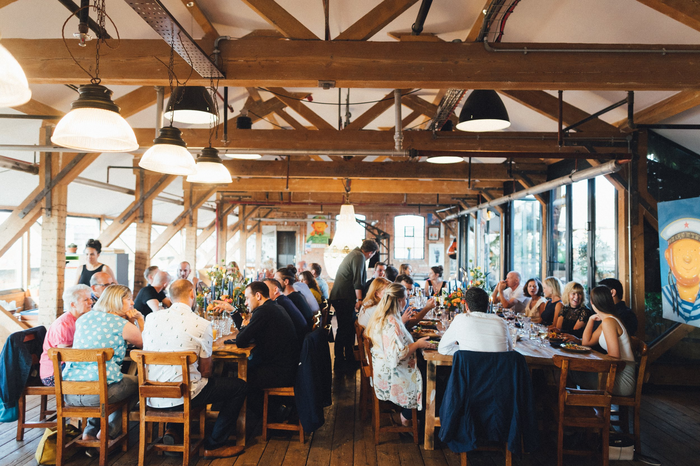

StaysEveryone under
Everyone under
one roof.
Sleep 2 to 12 in your own private loft. Slow mornings, a roof terrace, a Japanese style hot tub and a private sauna.
Find your dates ↗
A whole loft. Your kind of escape.
Old timber.
New memories.
315m²of original character
12overnight guests
50seated guests
100standing guests

Sleep 2 to 12 in your own private loft. Slow mornings, a roof terrace, a Japanese style hot tub and a private sauna.
Find your dates ↗
Private dinners, weddings, celebrations and retreats. Self catered hire with seating for up to 50 and standing space for up to 100.
Plan an event ↗Natural light, original factory features and room to create. Location hire is available from a half day, with parking and lift access.
Enquire about a shoot ↗